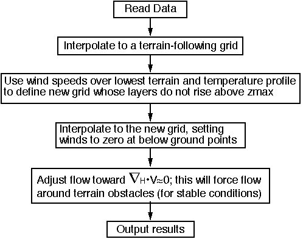

GWOCSS Project Documentation
![[ SFPorts WOCSS ]](docs/wocss-sfbay-winds_20156378-smaller.png)
This project is the GNU release of Winds On Critical Streamline Surfaces,
a diagnostic windfield model for complex terrain. It can be used in many
applications, from toxic dispersion to wind energy/wind hazard studies,
as well as fast downscaling of large forecast model grids. See below
for a short history and the
readme file
for a short list of journal references.
The source is still F77 fixed-format, and is currently being refactored
as part of the verification of the floating point math implementation. The new
autotools build uses exception traps and enforces Fortran and IEEE standards
(however GNU extensions are currently enabled to allow a deleted feature to
build under the F95 standard).
Other enhancements and/or extensions may also happen; stay tuned...
- Release Notes -
Autogenerated changelog for github releases (with a little history for context).
- Overview doc -
VTMX data CD user guide (not exactly current, but useful for config parameters)).
- Software API docs -
Software API documentation with call diagrams, etc.
- Complexity Metrics -
Source code metrics for a source code metrics tool... ;)
Short Overview of Winds On Critical Streamline Surfaces

How does G(NU)WOCSS work?
Mass conservation model (Estoque & Bhumralkar, 1969)
- Sigma-coordinate
- Variational calculus
Endlich (1967): variational => iterative adjustment
- Faster, but not perfectly non-divergent
Endlich & Ludwig (1982): sigma => user defined surfaces
- Allowed surfaces to intersect terrain, but
- Required user to define surface shapes for each case
- Iterative adjustment forces flow around obstacles
Critical streamline concepts to define surfaces
- Analogous to do what skilled analysts do
- Iterative adjustment forces flow around obstacles
![[ Steve Arnold ]](docs/hand.right.png)